Roteiro 1
Objetivo
Aqui vai o objetivo macro do roteiro. Por que estamos fazendo o que estamos fazendo?
Infra
Os pontos "tarefas" são os passos que devem ser seguidos para a realização do roteiro. Eles devem ser claros e objetivos. Com evidências claras de que foram realizados.
Tarefa 1
Instalando o MAAS:

Dashboard do MAAS
Conforme ilustrado acima, a tela inicial do MAAS apresenta um dashboard com informações sobre o estado atual dos servidores gerenciados. O dashboard é composto por diversos painéis, cada um exibindo informações sobre um aspecto específico do ambiente gerenciado. Os painéis podem ser configurados e personalizados de acordo com as necessidades do usuário.
Tarefa 2
App
Django em Nuvem Bare-Metal
Postgres é um servidor de banco de dados versátil e de fácil manejo. Muito usado em projetos Opensource e por isso vamos .
Durante a configuração inicial da nossa nuvem MaaS, realizamos um deploy manual de uma aplicação simples em Django. Para garantir que o ambiente estivesse corretamente configurado, fizemos um pequeno ajuste no servidor DNS.
Primeiramente, dentro da aba Subnets, acessamos a subnet 172.16.0.0/20 e editamos o Subnet Summary, substituindo o DNS pelo do Insper (172.20.129.131).
Parte 1: Banco de Dados
Primeiro Deploy
Durante a configuração inicial da nossa nuvem MaaS, realizamos um deploy manual de uma aplicação simples em Django. Para garantir que o ambiente estivesse corretamente configurado, fizemos um pequeno ajuste no servidor DNS.
Primeiramente, dentro da aba Subnets, acessamos a subnet 172.16.0.0/20 e editamos o Subnet Summary, substituindo o DNS pelo do Insper (172.20.129.131).
Banco de Dados
Como banco de dados, optamos pelo PostgreSQL, devido à sua versatilidade e facilidade de manejo, sendo amplamente utilizado em projetos Open Source.
Nosso primeiro passo foi acessar o Dashboard do MaaS e realizar o deploy do Ubuntu 22.04 no server1. Assim que a máquina estava operacional, conectamos ao terminal via SSH e realizamos a instalação do PostgreSQL:
Com o banco instalado, precisávamos configurar um usuário para a aplicação. Para isso, acessamos o usuário postgres:
Definimos a senha cloud e seguimos para a criação do banco de dados:
Para garantir que o banco pudesse ser acessado remotamente dentro da rede, ajustamos os arquivos de configuração.
No arquivo postgresql.conf, removemos o comentário da linha listen_addresses e a configuramos para aceitar conexões externas:
Modificamos a linha:
Em seguida, editamos o arquivo pg_hba.conf para permitir conexões de qualquer máquina dentro da subnet do kit:
Adicionamos a seguinte linha:
Após essas configurações, saímos do usuário postgres e liberamos a porta do banco no firewall:
Por fim, reiniciamos o serviço para aplicar as alterações:
Essa configuração garantiu que o banco de dados estivesse pronto para ser utilizado pela aplicação Django em um ambiente bare-metal dentro da nossa nuvem MaaS.
- Funcionando e seu Status está como "Ativo" para o Sistema Operacional
Usamos o comando:
para verificar o status do PostgreSQL 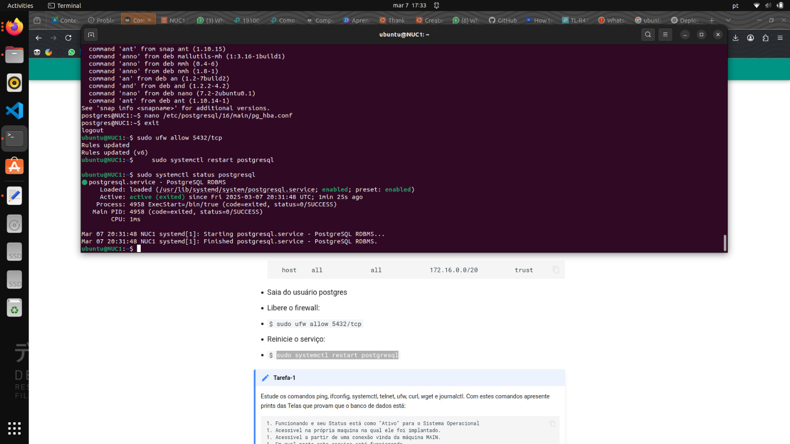 2. Acessivel na própria maquina na qual ele foi implantado. Para verificar que esta acessivel na própria maquina na qual ele foi implantado foi utilizado o comando: 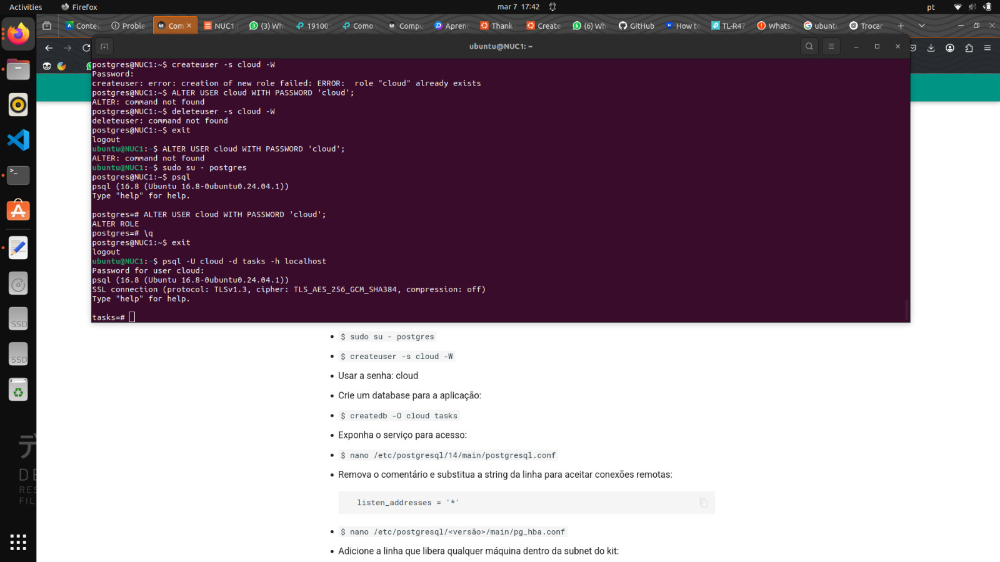 3. Acessivel a partir de uma conexão vinda da máquina MAIN. E para verificar que esta acessivel a partir de uma conexão vinda da máquina MAIN:{kind=link}
{kind=link}
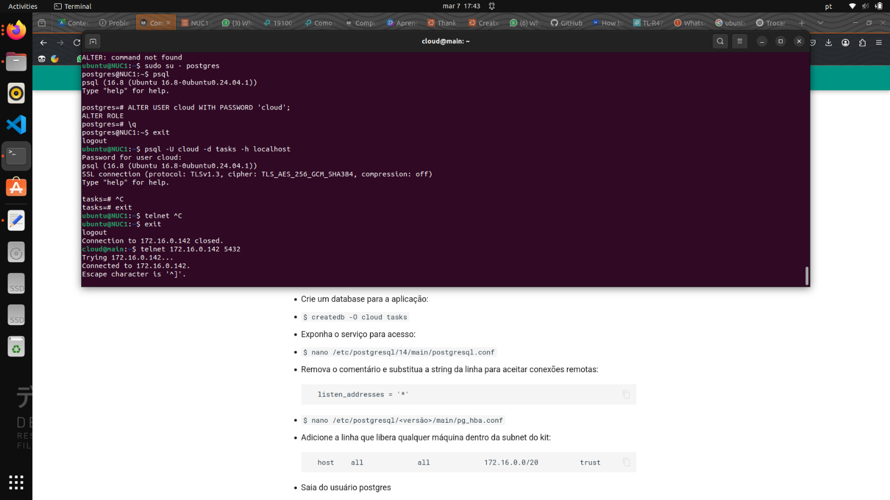 4. Em qual porta este serviço está funcionando.
{kind=link}
Finalmente verificamos em qual porta o PostgreSQL está rodando com:
{kind=link}
Parte 2: Implementação Manual da Aplicação Django e Banco de Dados
Configuração do MaaS
Para iniciar, acessei o MaaS e fiz login utilizando o CLI com o seguinte comando:
Em seguida, obtive o token no dashboard dentro das configurações do usuário. Com o token em mãos, solicitei a reserva de uma máquina no MaaS:
A resposta retornou um JSON contendo várias informações, entre elas o system_id, que anotei para uso posterior.
Deploy da Máquina e Instalação da Aplicação
Com o system_id, iniciei o deploy da máquina via CLI:
Assim que o deploy foi concluído, acessei a máquina server2 via SSH e clonei o repositório do projeto Django:
Naveguei até o diretório tasks e executei o script de instalação:
Após a instalação, reiniciei a máquina e aguardei o processo de inicialização.
Teste do Serviço
Como server1 não estava registrado no DNS, adicionei-o manualmente ao arquivo /etc/hosts do server2:
Apos a máquina reiniciar adicionei manualmente o IP no /etc/hosts
Esta configuração permite que o server2 resolva o nome server1 para o endereço IP 192.168.1.100, mesmo sem uma entrada correspondente no servidor DNS.
Note
Esta alteração é local apenas para server2 e não afeta outros sistemas na rede.
Para validar que a aplicação estava rodando corretamente, realizei um teste de acesso ao serviço na porta 8080 diretamente do terminal do MaaS:
Se o acesso fosse bem-sucedido, a interface de administração do Django estaria funcionando corretamente.
Exposição do Serviço via Túnel SSH
Para acessar a aplicação no navegador sem precisar configurar NAT no roteador, utilizei um túnel SSH. Primeiro, desconectei do SSH do MaaS e reconectei utilizando o seguinte comando:
Esse comando criou um túnel, redirecionando o serviço rodando na porta 8080 do server2 para a porta 8001 no meu localhost. Certifiquei-me de que a porta 8001 não estava em uso antes de rodar o comando.
Então, acessei o Django Admin pelo navegador no seguinte endereço:
Fiz login com as credenciais padrão:
- Usuário: cloud
- Senha: cloud
Tarefa 2
1.Dashboard do MAAS com as máquinas. 2. Da aba images, com as imagens sincronizadas. 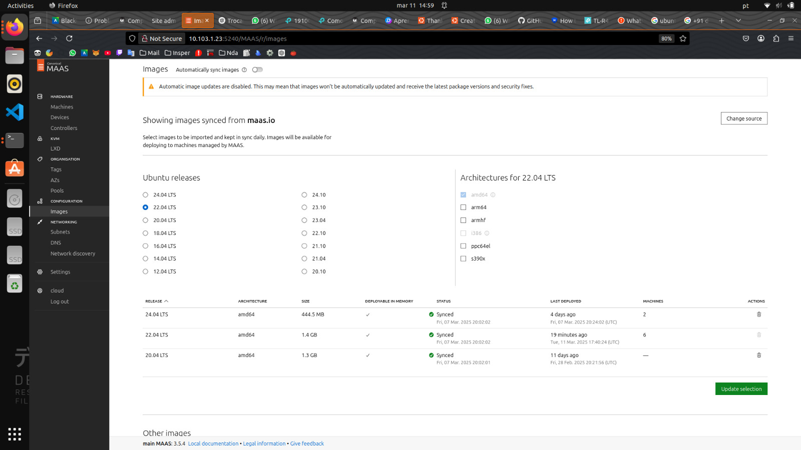 3. Aba de cada maquina(5x) mostrando os testes de hardware e commissioning com Status "OK" 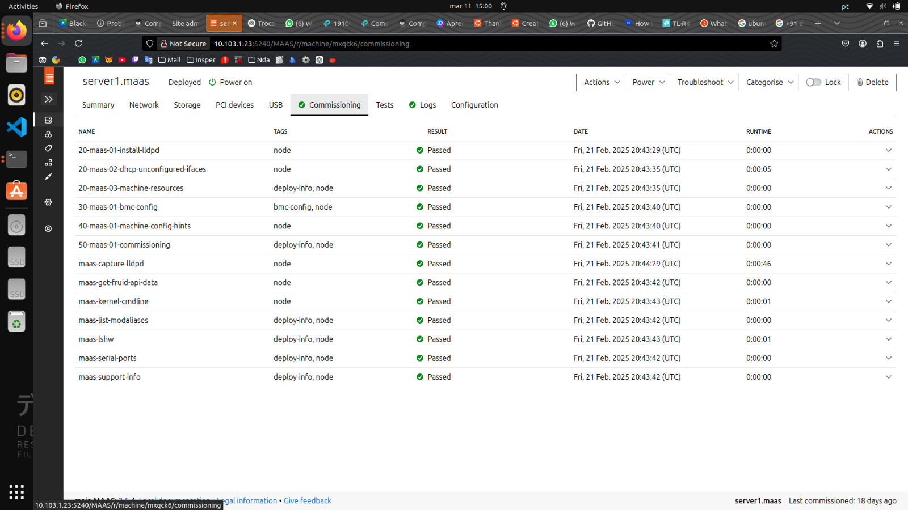 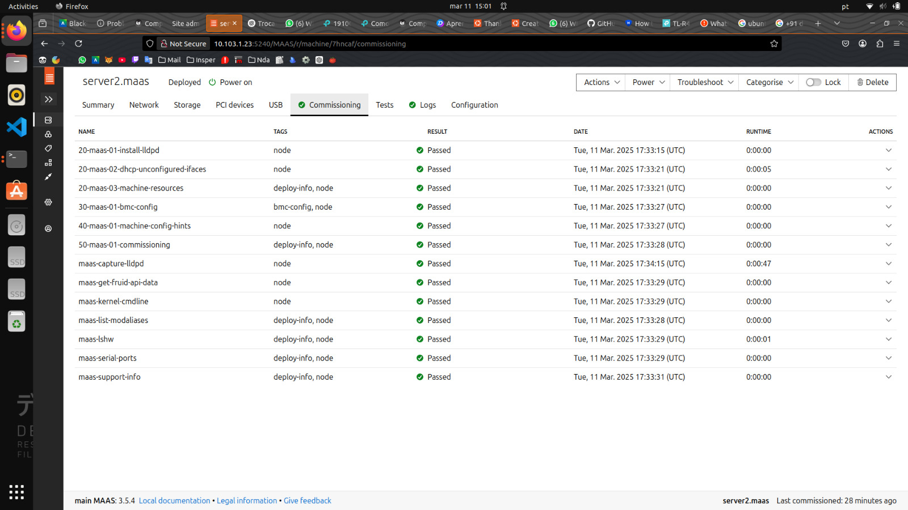 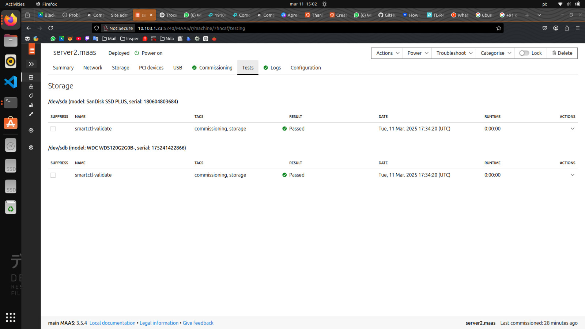 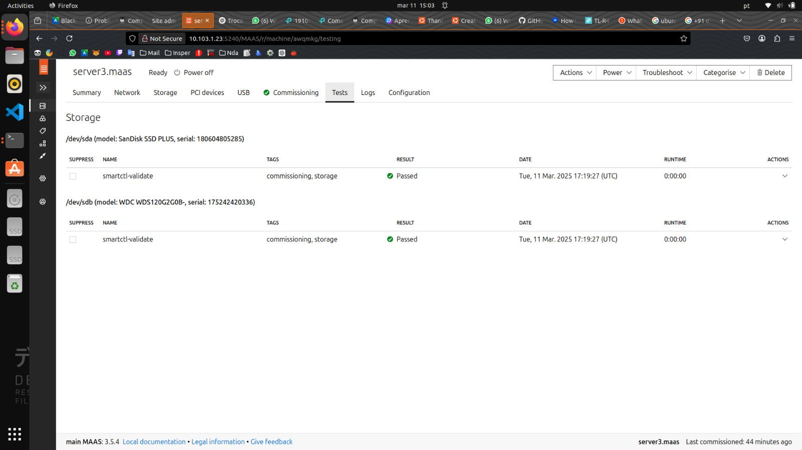
{kind=link}
{kind=link}
{kind=link}
{kind=link}
{kind=link}
{kind=link}
{kind=link}
{kind=link}
{kind=link}
{kind=link}
{kind=link}
{kind=link}
Parte 3: Status dos servidores
Tarefa-3
Prints Comprovando a Configuração
- Capturamos um print da tela do Dashboard do MAAS, mostrando as duas máquinas configuradas com seus respectivos IPs.
- Registramos também um print da aplicação Django em execução, comprovando a conexão com o servidor. 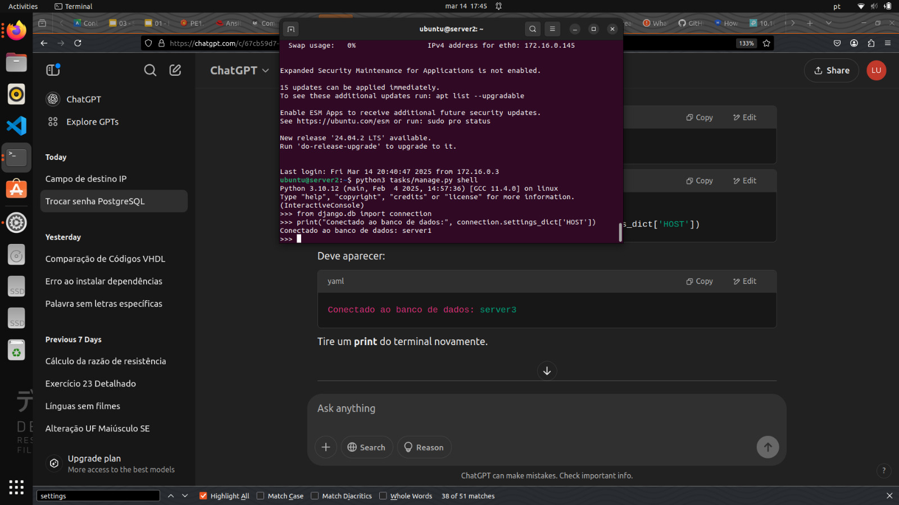
- Explique como foi feita a implementacao manual da aplicacao Django e banco de dados.
{kind=link}
{kind=link}
Implementação Manual da Aplicação Django e Banco de Dados
Inicialmente, configuramos uma única aplicação Django. No entanto, percebemos a necessidade de expandir para dois servidores de aplicação (server2 e server3), ambos conectados a um único banco de dados hospedado no server1. Essa estratégia foi adotada por dois motivos principais:
- Alta Disponibilidade: Caso um dos nós falhe, o outro continua operacional, garantindo acesso contínuo aos usuários.
- Balanceamento de Carga: Distribuímos as requisições entre os servidores, melhorando a escalabilidade e o desempenho da aplicação.
Para otimizar esse processo, decidimos automatizar a instalação e configuração usando o Ansible. Essa ferramenta facilitou a replicação do ambiente em múltiplos servidores, garantindo consistência e reduzindo erros manuais.
Parte 4: Utilizando o Ansible - Deploy Automatizado de Aplicação
Configuração do Server3 e Deploy com Ansible
Após para o maas via cli, igual feito anteriormente para o server2, realizamos a instalação e configuração do Ansible no servidor principal (main). Utilizamos o seguinte procedimento:
- Instalamos o Ansible:
- Baixamos o playbook de instalação da aplicação Django:
- Executamos o playbook para provisionar o server3 automaticamente:
O Ansible garantiu que todos os procedimentos fossem executados de forma idempotente, ou seja, podíamos repetir o processo sem impactar negativamente o ambiente. Além disso, possibilitou a configuração simultânea de múltiplos servidores, facilitando a expansão da infraestrutura.
Tarefa 4
- Tela do Dashboard do MAAS com as 3 Maquinas e seus respectivos IPs. 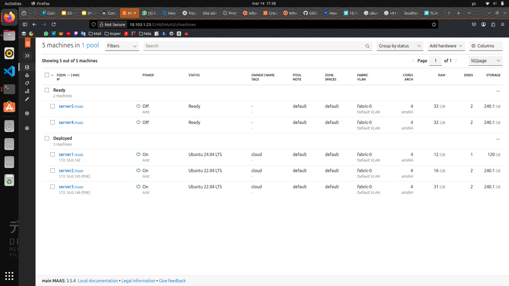
- Aplicacao Django, provando que voce está conectado ao server2 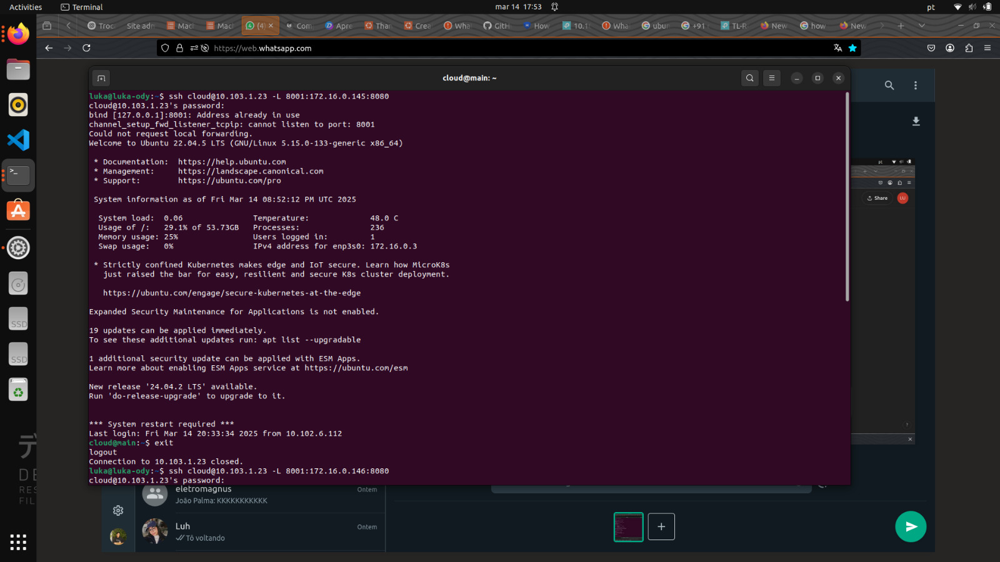
- Aplicacao Django, provando que voce está conectado ao server3 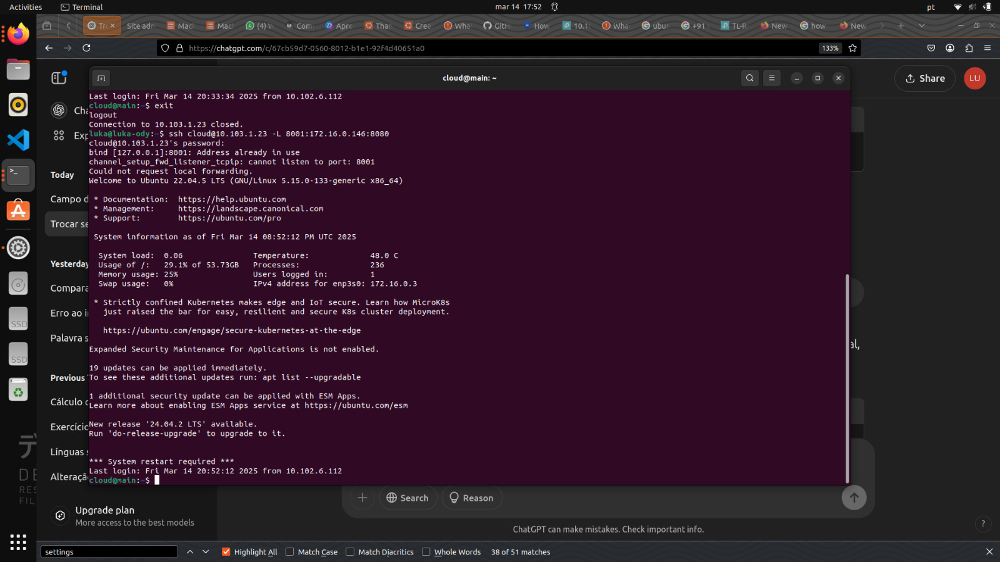
- Diferenca entre instalar manualmente a aplicacao Django e utilizando o Ansible.
{kind=link}
{kind=link}
{kind=link}
Com essa abordagem, conseguimos implementar uma solução escalável e confiável para nossa aplicação Django. A automação proporcionada pelo Ansible simplificou o gerenciamento dos servidores e garantiu que a aplicação estivesse sempre disponível e distribuída adequadamente.
Parte 4: Balanceamento de Carga com NGINX
Nossa Implementação com NGINX
Instalação do NGINX
Primeiramentea foi feito o deploy e instalação do NGINX no servidor server4 para atuar como nosso balanceador de carga:
Configuração do Módulo Upstream
Para configurar o balanceamento round robin, utilizamos o módulo upstream do NGINX. Editamos o arquivo de configuração do site padrão:
Adicionamos a configuração do balanceamento de carga da seguinte forma:
upstream backend {
server [IP_DO_SERVER2] :8080;
server [IP_DO_SERVER3] :8080;
}
server {
location / {
proxy_pass http://backend;
}
}
Após salvar as alterações, reiniciamos o serviço do NGINX:
Tarefa 5-
De um print da tela do Dashboard do MAAS com as 4 Maquinas e seus respectivos IPs. 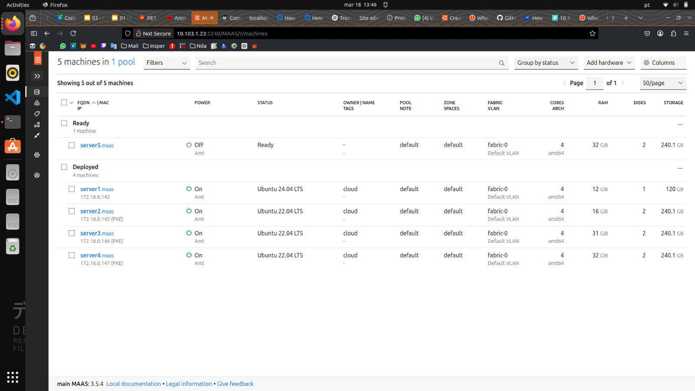 Personalização das Aplicações Django
-
Alteramos o conteúdo da mensagem contida na função
indexdo arquivotasks/views.pyde cada server para distinguir ambos os servers.
{kind=link}
Para podermos identificar facilmente qual servidor estava respondendo a cada requisição, modificamos o arquivo tasks/views.py em cada instância Django, alterando a mensagem de resposta para algo único em cada servidor:
# Em server1
from django.shortcuts import render
from django.http import HttpResponse
def index(request):
return HttpResponse("Hello, world. You're at server 2.")
{kind=link}
# Em server2
from django.shortcuts import render
from django.http import HttpResponse
def index(request):
return HttpResponse("Hello, world. You're at server 2.")
{kind=link}
-
Faça um
GET requestpara o path que voce criou em urls.py para o Nginx e tire 2 prints das respostas de cada request, provando que voce está conectado ao server 4, que é o Proxy Reverso e que ele bate cada vez em um server diferente server2 e server3. -
As respostas de cada request do server 4, mostram que cada vez que um
GET requesté feito ele bate cada vez em um server diferente server2 e server3. 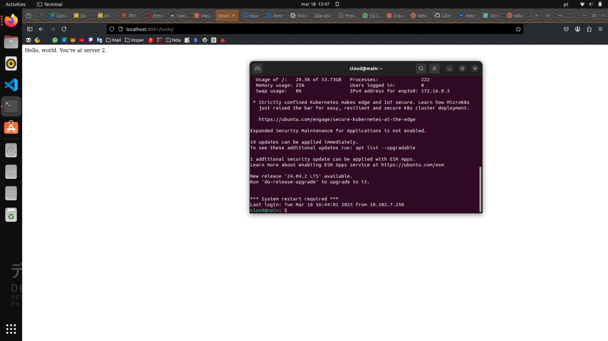 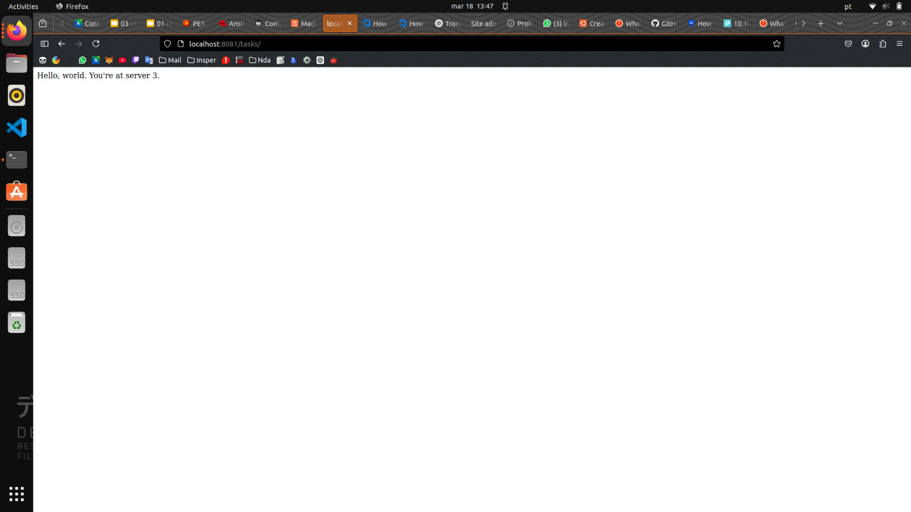
{kind=link}
{kind=link}